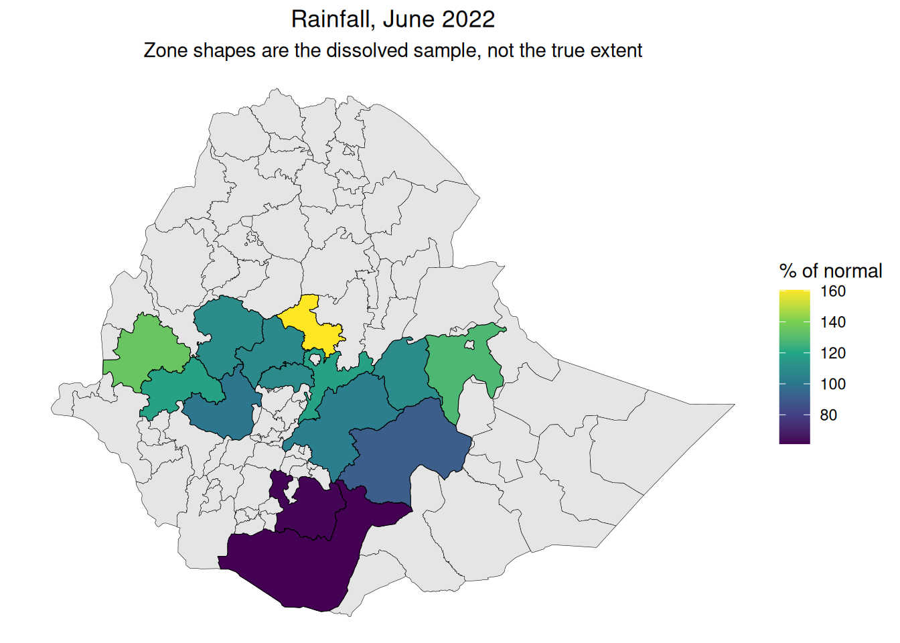
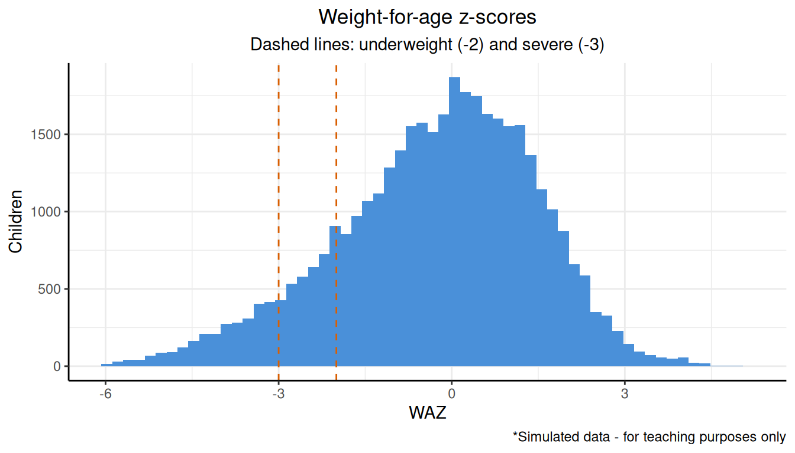
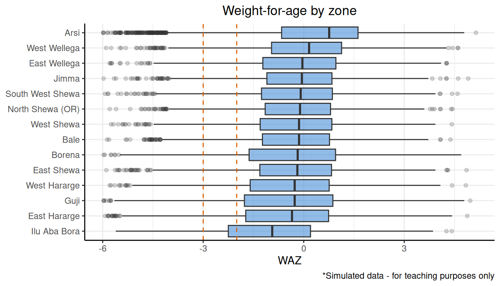
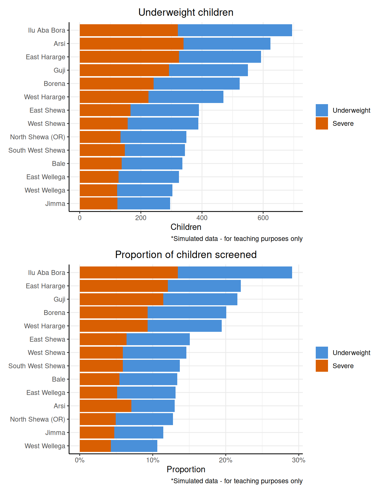
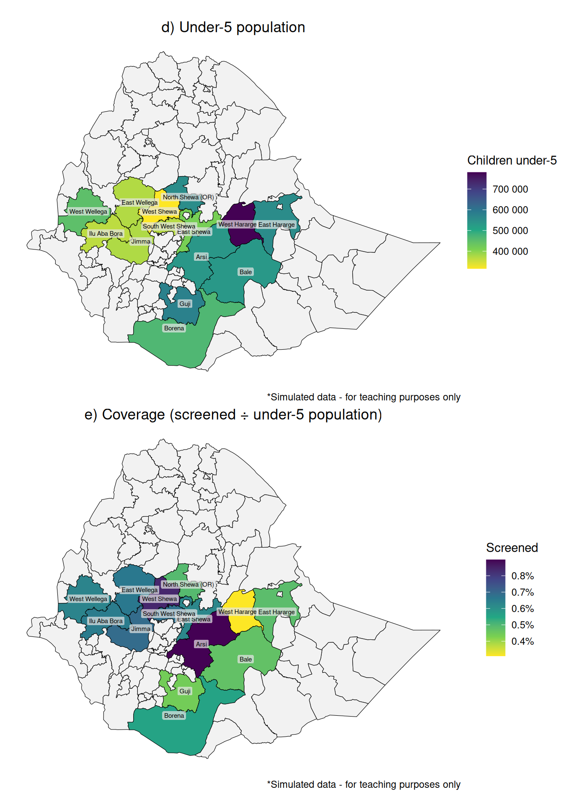
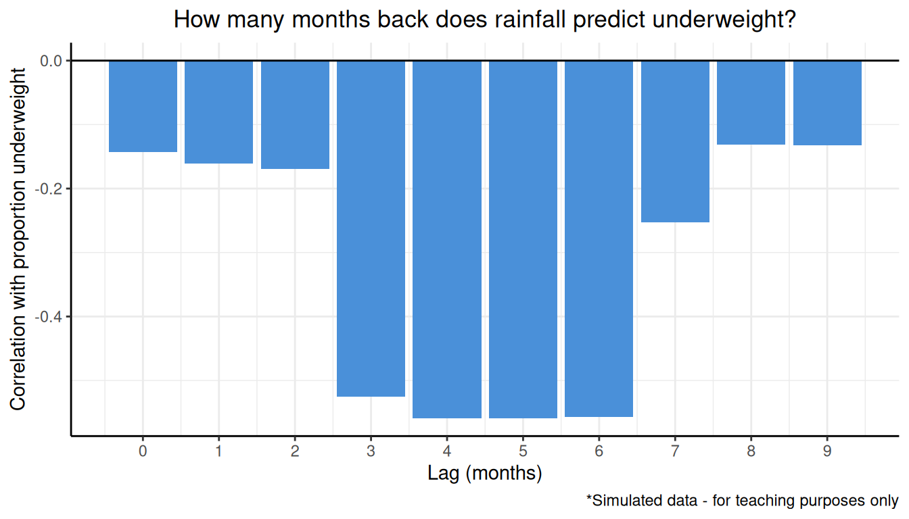
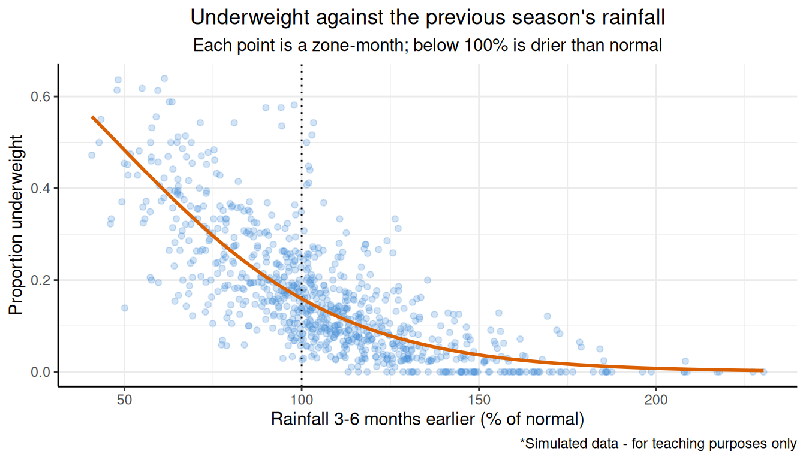
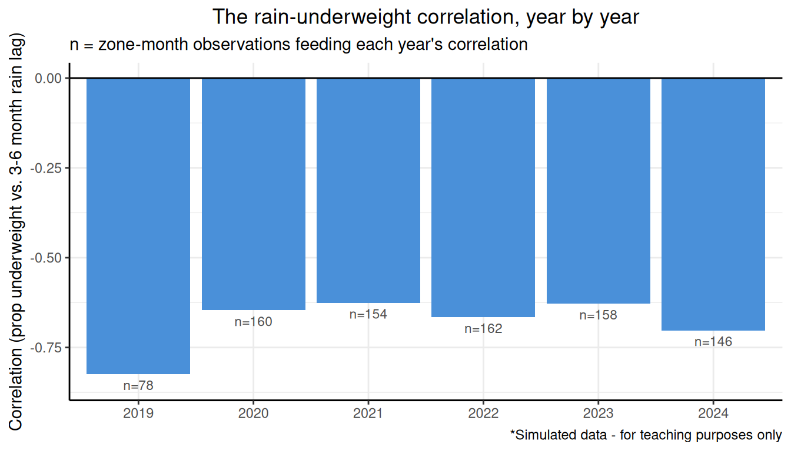
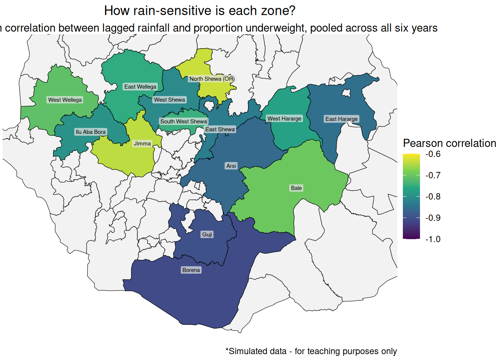

EDAM training - cleaning and exporing data (solutions)
Author
Tristan Naidoo
Published
September 3, 2026
⚠️ This is simulated data, for teaching purposes only. All screening, population, and health post data is simulated. Nothing here describes a real person, health facility, programme or nutrition outcome. Only the rainfall data is real, sourced from OCHA HDX.
Overview
In this tutorial, imagine you work in an analysis team in a nutrition office in the Ethiopian Ministry of Health. You have just received a request from the Oromia Regional Health Bureau. Rainfall has been poor across the region for the past two seasons, and they want to know whether this is showing up in child nutrition. Based on their request, you determine that there are two main questions to answer:
Which zones in Oromia have the highest malnutrition?
Is rainfall associated with child malnutrition in Oromia?
To answer these you have growth-monitoring records for children under 5 from health posts across 56 woredas (districts) in 14 zones, and rainfall estimates for the same zones and months. There is no budget or time for a survey.
You will work towards an answer in three parts, each building on the output of the last:
Checking data quality. You apply six data quality dimensions to the raw register: accuracy, completeness, uniqueness, consistency, timeliness, and validity. This gives you one documented cleaning pipeline.
Working with shapefiles. This part focuses on shapefiles and, more specifically, on how you get the cleaned register onto a map. It covers coordinate reference systems, spatial joins, and the difference between dissolving geometry and aggregating data.
Creating an outcome variable and exploring it. You determine how many children are underweight, and convert these to proportions so you can compare across zones. You then use exploratory analysis to inspect these proportions and answer both questions above.
By the end you will have a clean, geographically located, outcome-scored dataset, and an answer to both questions along with its limitations.
Setup
Code
# Setup chunk# Libraries used in this tutoriallibrary(anthro)library(dplyr)library(forcats)library(ggplot2)library(lubridate)library(patchwork)library(readr)library(sf)library(stringr)library(tidyr)# Caption for plotssim_caption <-"*Simulated data - for teaching purposes only"
Part 1 - check your ingredients
Throughout this tutorial you will use four data tables and two shapefiles. You read in each file as it is required, and a brief explanation of the dataset and its codebook comes before each one.
In this part, you will focus on nutrition screening as an illustrative example, but in practice you should check all your files.
nutrition_screening.csv - one row per child per visit
The raw growth-monitoring register. This captures every visit a child made to a health post, typed in by hand.
Field
Type
Description
record_id
text
Unique visit identifier
person_id
text
Unique person identifier (identifies the person across visits)
woreda_name
text
Woreda name as typed at the health post
health_post
text
Unique identifier of the health post the child attended
visit_date
date
Date of the screening visit
entry_date
date
Date the record was entered into the system. Compare to visit_date for reporting lag
sex
text
The sex of the child
dob
date
Date of birth of the child
age_value
number
Age as recorded, in the unit given by age_unit
age_unit
text
The age unit ("months"/"years")
weight_kg
number
Child’s weight in kilograms (kg)
height_cm
number
Child’s height/length in centimetres (cm)
muac_mm
number
Mid-upper arm circumference (MUAC), in millimetres (mm)
Rows: 41535 Columns: 13
── Column specification ────────────────────────────────────────────────────────
Delimiter: ","
chr (6): record_id, person_id, woreda_name, health_post, sex, age_unit
dbl (4): age_value, weight_kg, height_cm, muac_mm
date (3): visit_date, entry_date, dob
ℹ Use `spec()` to retrieve the full column specification for this data.
ℹ Specify the column types or set `show_col_types = FALSE` to quiet this message.
What have you got?
You start by looking at the first few rows, and then at a summary of every column.
Code
head(screening)
# A tibble: 6 × 13
record_id person_id woreda_name health_post visit_date entry_date sex
<chr> <chr> <chr> <chr> <date> <date> <chr>
1 R001125 C008717 Kersana Malima HP041307-01 2019-03-03 2019-03-07 F
2 R006282 C008759 Aleltu HP040617-02 2019-12-09 2019-12-18 M
3 R020461 C002176 Leka Dulecha HP040212-01 2022-02-13 2022-02-24 F
4 R017536 C005792 Guchi HP041290-07 2021-09-01 2021-09-04 f
5 R003904 C005619 Dama HP041408-04 2019-08-02 2019-08-15 Male
6 R013965 C003766 Adama HP040703-04 2021-02-14 2021-02-15 M
# ℹ 6 more variables: dob <date>, age_value <dbl>, age_unit <chr>,
# weight_kg <dbl>, height_cm <dbl>, muac_mm <dbl>
Code
summary(screening)
record_id person_id woreda_name health_post
Length :41535 Length :41535 Length :41535 Length :41535
N.unique :41455 N.unique :10292 N.unique : 205 N.unique : 290
N.blank : 0 N.blank : 0 N.blank : 0 N.blank : 0
Min.nchar: 7 Min.nchar: 7 Min.nchar: 4 Min.nchar: 11
Max.nchar: 8 Max.nchar: 7 Max.nchar: 26 Max.nchar: 11
visit_date entry_date sex
Min. :2019-01-01 Min. :2019-01-04 Length :41535
1st Qu.:2020-06-08 1st Qu.:2020-06-16 N.unique : 10
Median :2021-12-12 Median :2021-12-20 N.blank : 0
Mean :2021-12-15 Mean :2021-12-24 Min.nchar: 1
3rd Qu.:2023-06-25 3rd Qu.:2023-07-03 Max.nchar: 6
Max. :2024-12-31 Max. :2025-04-07 NAs : 63
dob age_value age_unit weight_kg
Min. :2014-01-01 Min. : 0.00 Length :41535 Min. : 1.50
1st Qu.:2017-10-03 1st Qu.: 4.00 N.unique : 2 1st Qu.: 8.60
Median :2019-06-12 Median :15.00 N.blank : 0 Median : 12.50
Mean :2019-06-01 Mean :20.18 Min.nchar: 5 Mean : 23.86
3rd Qu.:2021-01-07 3rd Qu.:35.00 Max.nchar: 6 3rd Qu.: 16.10
Max. :2024-11-05 Max. :59.00 Max. :19200.00
NAs :1174
height_cm muac_mm
Min. : 0.521 Min. : 93.0
1st Qu.: 75.700 1st Qu.:125.0
Median : 88.900 Median :132.0
Mean : 85.767 Mean :131.7
3rd Qu.: 98.700 3rd Qu.:138.0
Max. :119.800 Max. :168.0
NAs :1564 NAs :366
Three things are already visible:
weight_kg maximum in the thousands - grams in a kilogram field.
height_cm minimum well under 1 - heights entered in metres.
height_cm, muac_mm, sex, and weight_kg all have missing values. That is check 1 - how much, and does it cluster anywhere?
Every check below works on cohort_clean - a single object you build up as you go, one dimension at a time. Where a dimension has a known, explainable fix, you apply it immediately and cohort_clean carries the fix into the next check. At the end you collect the same set of decisions into one documented pipeline, so you can see both ways of getting there.
Code
cohort_clean <- screening
1. Completeness
To assess completeness, you check what percentage of values are missing per column and look for patterns.
You raise weight_kg, height_cm, sex and muac_mm with the regional bureau. They come back having already looked into three of the four: weight_kg and height_cm are missing completely at random (MCAR), meaning the missingness is unrelated to the data. There is nothing to explain, and nothing to fix beyond dropping those rows. However, sex is missing at the visit level rather than the child level - a child’s other visits usually carry a usable value. These rows are recovered when we consider consistency.
They are less sure about muac_mm, though. Their guess is missing at random (MAR), meaning it is missing for a reason tied to something you can see in the data. They suggest looking at the health post, since that is the level at which equipment and staffing actually vary:
Two health posts stand out, one missing 80% of its MUAC readings and another 58%, while every other post has none at all. That confirms the bureau’s guess: the missingness lines up with health_post, a column you can see, not with the MUAC value itself. This is missing at random (MAR). Most likely, neither post has a working MUAC tape.
muac_mm is not used anywhere else in this analysis, so you do not repair this missingness.
Since you take this to be MAR, how would you address the missingness? The missingness is explained by an observed column, so condition on that column. If you needed muac_mm downstream, you would impute it using health_post as a predictor rather than a single overall mean that ignores which posts are measuring at all. Here it is not used downstream, so leave it missing and document why.
What would you need to see instead for muac_mm to be MNAR? Give a concrete example. The missingness would have to depend on the MUAC value itself. For example, fieldworkers skipping the tape on children who looked visibly thin, perhaps because those children were fast-tracked into treatment. The lowest readings would then be the ones missing. Comparing weight_kg between children with and without a reading might hint at this, but a gap fully explained by weight_kg would then become MAR, since weight_kg is observed. MNAR means the gap survives conditioning on every column you have, which is why you can never confirm it from the data alone.
2. Accuracy
To assess accuracy, you check whether recorded values are physically possible, and wherever you know the actual mechanism behind the error, you repair it rather than remove it.
You contact the regional office that provided this data for guidance. They confirm three known issues: some weights were mistakenly recorded in grams rather than kilograms, some heights in metres rather than centimetres, and some ages in months have been recorded as years. You count how many rows each issue affects.
# A tibble: 8 × 4
age_value age_unit weight_kg height_cm
<dbl> <chr> <dbl> <dbl>
1 3 years 12000 92.4
2 9 months 7200 67.7
3 48 years 17.2 102.
4 0 months 2 39.9
5 18 years 9.5 77.3
6 18 months 8900 80.5
7 2 years 9700 81.5
8 4 years 17500 103.
Given that you know the cause, you can fix the problematic rows. If you did not know the cause, you would need to decide whether to drop the rows (assuming there is no pattern to which ones are problematic) or contact the bureau to figure out the cause.
To assess validity, you check whether values conform to what the field is supposed to contain.
The regional bureau warns you about two columns where data capturers may have made mistakes. First, sex comes in under several different codes, when it should always be F or M. Second, woreda names come in with inconsistent capitalisation and stray whitespace, when there should be exactly 57 names: 56 sampled woredas plus one “Unknown”. You check both before fixing anything.
Code
# Sexcount(cohort_clean, sex)
# A tibble: 11 × 2
sex n
<chr> <int>
1 1 983
2 2 937
3 F 13574
4 FEMALE 583
5 Female 2325
6 M 13642
7 MALE 644
8 Male 2368
9 f 1812
10 m 1919
11 <NA> 58
Note that sex_std, woreda_std, and age_months are new columns rather than overwritten originals, so you can always get back to what was actually typed.
4. Consistency
To assess consistency, you check whether values that describe the same real-world fact agree with each other. In this dataset, that means a child’s sex and date of birth should stay the same across every visit they made.
# A tibble: 2 × 3
conflicting_sex conflicting_dob n
<lgl> <lgl> <int>
1 FALSE TRUE 17
2 TRUE FALSE 30
Out of all the children, 30 have more than one recorded sex and 17 have more than one recorded date of birth.
Note that this runs on sex_std, not sex. Without the standardisation from the validity step above, M, m and Male would count as three different values and almost every child would look inconsistent.
For each person_id with a conflict, you take the most common recorded value across their visits and apply it everywhere. Note that this assumes the majority entry is the correct one, which is a judgement call and should be documented.
Two fixes are needed. Identical rows are one submission sent twice, and distinct() handles them cleanly. The rest are the same child on the same day with a newrecord_id and a different weight. This is double data entry where the attempts disagree. You keep the newer one, identified here by the larger record_id, on the assumption that a value gets re-keyed because someone noticed a problem with the first. As before, document the assumption.
To assess timeliness, you check whether data arrived, and was collected, quickly enough to be useful.
The bureau tells you that they received data from most woredas in January, but that Jimma Town only provided data in March. You calculate the reporting lag (the gap in days between visit_date and entry_date) per woreda, and look at the five woredas with the longest median lag.
# A tibble: 5 × 2
woreda_std median_lag
<chr> <dbl>
1 Jimma Town 97
2 Unknown 8
3 Adama 7
4 Adama Tulu Jido Kombolcha 7
5 Agaro Town 7
Jimma Town has a median reporting lag of 97 days, about three months, while every other woreda sits at 7 days, about a week, which aligns with what the bureau told you. This means that most woredas report data soon after a visit, but that Jimma Town may have a backlog or another issue preventing prompt entry.
Since there is a reporting lag between a visit happening and it being entered, you check the last month for which you have visit dates against the months before it, in case the most recent month has not caught up yet.
In this part you assessed each data dimension and fixed issues as they arose. Another approach is to collect every fix into a single pipeline that cleans everything in one place, which is easier to audit, rerun, and hand over to someone else.
The same fixes, collected into a single pipeline, are given below:
Code
sex_lookup <-c("f"="F", "female"="F", "1"="M","m"="M", "male"="M", "2"="F")most_common <-function(x) { x <- x[!is.na(x)]if (length(x) ==0) return(NA)names(sort(table(x), decreasing =TRUE))[1]}cohort_clean <-read_csv("data/input/nutrition_screening.csv") |># 1. Completeness: drop rows missing MCAR fields; leave muac_mm as isfilter(!is.na(weight_kg), !is.na(height_cm)) |># 2. Accuracy: repair confirmed unit errors in placemutate(age_unit =if_else(age_unit =="years"& age_value >5, "months", age_unit),weight_kg =if_else(weight_kg >30, weight_kg /1000, weight_kg),height_cm =if_else(height_cm <40, height_cm *100, height_cm) ) |># 3. Validity: standardise into new columns, keep the originalsmutate(sex_std =unname(sex_lookup[str_to_lower(sex)]),woreda_std =str_to_title(str_squish(woreda_name)),age_months =if_else(age_unit =="months", age_value, age_value *12) ) |># 4. Consistency: resolve sex/dob to each person's majority valuegroup_by(person_id) |>mutate(sex_std =most_common(sex_std),dob =as.Date(most_common(dob))) |>ungroup() |># 5. Uniqueness: drop exact duplicates, keep the newest same-day entrydistinct() |>group_by(person_id, visit_date) |>slice_max(record_id, n =1, with_ties =FALSE) |>ungroup() |># 6. Timeliness: drop the final, structurally incomplete monthmutate(month =floor_date(visit_date, "month")) |>filter(month <max(month))
Whichever approach you take, write down what you did and what you assumed.
Completeness.weight_kg and height_cm were confirmed MCAR and dropped; muac_mm was MAR but is not used in this analysis, so you did not fix it.
Accuracy. Unit errors in weight, height and age repaired in place, no rows dropped. Assumption: every value past the threshold is a unit error rather than a genuine outlier, which rests on the bureau’s confirmation.
Validity.sex_std, woreda_std and age_months added as new columns, originals kept. Assumption: the codes 1/2 map to M/F as given, and title-casing plus trimming collapses every typo without merging two real woredas.
Consistency. Sex and date of birth resolved by majority vote across a person’s own visits. Assumption: the most frequent value is the correct one. When there is a tie, you take the earliest date, and F over M since it is alphabetically smaller.
Uniqueness. Exact duplicates dropped, same-day conflicts resolved by record_id. Assumption: a larger ID on the same person and day means a corrected re-entry, not a second visit.
Timeliness. The final incomplete month dropped; the slow woreda is a process finding, not a value to fix. Assumption: December’s shortfall is a mid-month extract, not a real drop in visits.
Part 2 - working with shapefiles
In this part you focus on working with shapefiles and joining your various datasets to them. You will use two shapefiles. The first is supplied by the regional bureau (woredas.shp) and contains the 56 woredas they sampled. The second is eth.shp, which you downloaded yourself from the public national database for country-wide context.
eth.shp - 1,148 national woredas, lon/lat (EPSG:4326)
Source: HDX. Woreda codes and names match woredas.shp, and each woreda also carries the name and code of its zone and region. Note that Oromia’s zones have changed since the rainfall data was produced, with some zones splitting. The shapefile has been edited to merge those zones back together, so zone_pcode matches all 14 zones in the rainfall file.
Field
Type
Description
wor_pcode
text
Woreda code
wor_name
text
Woreda name
zone_pcode
text
Zone code
zone_name
text
Zone name
reg_pcode
text
Region code
reg_name
text
Region name
geometry
MULTIPOLYGON
The woreda’s boundary shape
Code
eth <-st_read("data/input/eth.shp", quiet =TRUE)
1. What is in a shapefile?
You start by printing the object and reading its header.
The header is the useful part. Geometry type is MULTIPOLYGON, so some woredas are in more than one piece. The bounding box numbers are in the hundreds of thousands, so these are metres, not degrees. The CRS is UTM zone 37N.
There are two things to watch for when you subset or summarise an sf object.
eth |>st_drop_geometry() |>count(zone_name) |>head()
zone_name n
1 Afder 9
2 Agnewak 7
3 Alle Special 1
4 Area 1 9
5 Area 2 3
6 Area 3 6
select(wor_name) returns two columns, not one, because geometry is sticky and comes along unless you explicitly drop it. That is usually what you want on a map and never what you want in a summary table. woredas.shp only has 56 rows, too few for that to cost you anything either way, so the second example uses eth. 1,148 rows is where st_drop_geometry() first actually saves you something, and where forgetting to drop it before a group_by() can turn seconds into minutes.
2. Where is your data?
You add a flag to eth marking which woredas were sampled, so that you can see your woredas in context.
Code
eth <- eth |>mutate(sampled = wor_pcode %in% woredas$wor_pcode)eth |>st_drop_geometry() |>count(sampled)
sampled n
1 FALSE 1092
2 TRUE 56
This is an ordinary mutate() against a vector, not a join in the sf sense. It matches on wor_pcode, a shared code, so it works even though eth is lon/lat and woredas is UTM. CRS only matters once two geometries interact directly, as Task 3 shows.
eth now carries everything you need: the national picture, the admin hierarchy, and a flag for the 56 sampled woredas. You use woredas in Task 3 because it is the file with the wrong projection, but all other tasks use eth, filtered to sampled when you mean just those 56.
Carrying the full country through every step costs more than it needs to. Working from woredas and joining back to eth only at the end would be faster, but keeping one object throughout is easier to follow.
You now plot some maps and look at the woredas your data comes from. You plot the following five maps:
Note the difference between plot 4 and plot 5.coord_sf() and filter() answer different questions. coord_sf() restricts the view and keeps neighbouring woredas visible at the edges. filter() deletes them, so the study area floats in white space with no borders to locate it against. Zoom when you want context; filter when you genuinely mean “these and only these”.
You need to choose a plot to show the sampled woredas in a report. Which would you choose? Either the third or the fourth plot. The fifth is not wrong, but it removes the context that lets a reader judge coverage. Someone seeing scattered fragments assumes that is the study area, rather than a sample within a much larger region.
3. Coordinate reference systems
health_posts.csv - one row per health post
Locations of the health posts that captured data in the screening register (nutrition_screening.csv).
Field
Type
Description
health_post
text
Identifier. Joins to nutrition_screening.csv.
hp_name
text
Human-readable name.
lon
number
Longitude. A handful of rows have longitude and latitude swapped; see Part 2, Task 4.
lat
number
Latitude. A few rows are missing entirely; one sits exactly on a woreda boundary, by design.
Code
posts <-read_csv("data/input/health_posts.csv")
Rows: 290 Columns: 4
── Column specification ────────────────────────────────────────────────────────
Delimiter: ","
chr (2): health_post, hp_name
dbl (2): lon, lat
ℹ Use `spec()` to retrieve the full column specification for this data.
ℹ Specify the column types or set `show_col_types = FALSE` to quiet this message.
You want to join the posts to one of your shapefiles so that you can see where the health posts that collected your data are. You receive a csv with lon/lat details, and you convert it into an sf object - geometry does not always have to come from a shapefile.
Simple feature collection with 290 features and 2 fields
Geometry type: POINT
Dimension: XY
Bounding box: xmin: 4.26513 ymin: 3.6732 xmax: 42.80301 ymax: 38.65136
Geodetic CRS: WGS 84
# A tibble: 290 × 3
health_post hp_name geometry
* <chr> <chr> <POINT [°]>
1 HP040112-01 Yubdo 1 Health Post (35.46421 8.94348)
2 HP040112-02 Yubdo 2 Health Post (35.36583 8.98361)
3 HP040112-03 Yubdo 3 Health Post (35.46394 8.93517)
4 HP040112-04 Yubdo 4 Health Post (35.44288 8.94023)
5 HP040112-05 Yubdo 5 Health Post (35.53615 8.94063)
6 HP040112-06 Yubdo 6 Health Post (35.49619 8.907)
7 HP040112-07 Yubdo 7 Health Post (35.38733 8.95495)
8 HP040204-01 Haro Limu 1 Health Post (36.15995 9.80127)
9 HP040204-02 Haro Limu 2 Health Post (36.33321 9.58561)
10 HP040204-03 Haro Limu 3 Health Post (36.28799 10.09563)
# ℹ 280 more rows
Note that the geometry of posts_sf is a POINT.
Now you try to join posts_sf and woredas, which have different CRSs.
Code
st_join(posts_sf, woredas, join = st_within)
Error in `st_geos_binop()` at sf/R/geom-predicates.R:222:19:
! st_crs(x) == st_crs(y) is not TRUE
sf refuses: st_crs(x) == st_crs(y) is not TRUE. Metres and degrees are not interchangeable, and a silent wrong answer would be worse than an error - every point would land in the Gulf of Guinea, near (0, 0).
You transform the woredas into lon/lat so that both objects share a CRS.
Note st_transform() vs st_set_crs(). Transform recalculates every coordinate into the new system. Set just writes a different label onto unchanged numbers - appropriate only when the CRS was missing or wrong in the first place. Using st_set_crs() where st_transform() was meant moves the data thousands of kilometres and produces no error at all.
4. Point in polygon
You now join the posts to woredas_ll to find which polygon each health post falls within. st_join() needs a predicate to decide what counts as a match. You use st_within, which only counts a point as inside a polygon if it is fully enclosed by it. The common alternative is st_intersects, which is more generous: it counts anything touching the polygon at all, including its edge.
Code
joined <-st_join(posts_sf, woredas_ll, join = st_within)c(total_posts =nrow(joined),posts_matched =sum(!is.na(joined$wor_pcode)),posts_unmatched =sum(is.na(joined$wor_pcode)))
The order of the arguments matters: st_join() keeps the first object’s rows and geometry, so posts_sf has to come first for the result to have one row per post. Swapping them gives one row per woreda instead, and st_within(woredas_ll, posts_sf) would ask whether each polygon sits inside a point.
Four posts were not matched. You plot the posts to see whether you can work out why.
Next you look at the longitude and latitude of the problematic posts.
Code
joined |>filter(is.na(wor_pcode)) |># st_coordinates() pulls the X/Y values out of a geometry column into a# plain matrix - column 1 is X (lon), column 2 is Y (lat)mutate(lon =st_coordinates(geometry)[, 1],lat =st_coordinates(geometry)[, 2]) |>st_drop_geometry() |>select(health_post, lon, lat)
Comparing these coordinates against Ethiopia’s bounding box, it seems that the lon and lat values have been entered the wrong way round, putting these posts in the Mediterranean.
You flag the swapped rows, swap them back, and redo the join.
What if a post sits exactly on a woreda boundary?st_within would not match it - a point on the edge is not strictly inside either polygon. st_intersects would match this point twice, since it touches the edge of both woredas. The geometry is ambiguous, and you would have to decide which behaviour you want.
5. Joining tables to a shapefile
woreda_population.csv - one row per woreda per year (2019-2024)
The number of people, and the number of under-5s, living in each woreda each year.
Field
Type
Description
woreda_pcode
text
Woreda code
woreda_name
text
Woreda name
year
number
Calendar year of the projection
total_pop
number
Total projected population
pop_under2
number
Projected population under 2 years
pop_under5
number
Projected population under 5 years
Code
pop <-read_csv("data/input/woreda_population.csv")
Rows: 336 Columns: 6
── Column specification ────────────────────────────────────────────────────────
Delimiter: ","
chr (2): woreda_pcode, woreda_name
dbl (4): year, total_pop, pop_under2, pop_under5
ℹ Use `spec()` to retrieve the full column specification for this data.
ℹ Specify the column types or set `show_col_types = FALSE` to quiet this message.
You can also join a table to a shapefile as normal, as long as there is a column to join on.
Code
before <-nrow(woredas)wor_pop <- woredas |>left_join(pop, by =c("wor_pcode"="woreda_pcode"))c(before = before,pop_years =n_distinct(pop$year),after =nrow(wor_pop))
before pop_years after
56 6 336
The number of rows has grown, since each woreda now maps to each population year (that is, the number of rows before multiplied by the number of population years). The geometry is repeated across these rows, so exercise caution when joining to shapefiles, as the output can grow quickly.
Now you try making the same join using woreda names.
Code
by_name <- woredas |>left_join(pop, by =c("wor_name"="woreda_name"))sum(is.na(by_name$total_pop))
wor_name
1 Mulo
2 Adama Tulu Jido Kombolcha
3 Bule Hora
4 Borecha
Four woredas fail. The population file spells each with a trailing vowel swapped for e: Mulo should have matched Mule, Adama Tulu Jido Kombolcha should have matched Adama Tulu Jido Kombolche, Bule Hora should have matched Bule Hore, and Borecha should have matched Boreche. Joining by name is less reliable than using a code or coordinates.
6. Aggregating up
zone_rainfall.csv - one row per zone per month
Monthly rainfall for each zone, already summarised from satellite data.
Field
Type
Description
zone_pcode
text
Zone unique identifier
date
date
First of the month that the rainfall applies to
n_pixels
number
Climate Hazards Group InfraRed Precipitation with Station data (CHIRPS) pixels averaged for this zone
rain_mm
number
Rainfall total for the month, in mm.
rain_lta_mm
number
Long-term average rainfall for that same calendar month, in mm
rain_anom_pct
number
rain_mm as a percentage of rain_lta_mm. 100 is normal, below 100 is drier than usual, above 100 is wetter
Rows: 1008 Columns: 6
── Column specification ────────────────────────────────────────────────────────
Delimiter: ","
chr (1): zone_pcode
dbl (4): n_pixels, rain_mm, rain_lta_mm, rain_anom_pct
date (1): date
ℹ Use `spec()` to retrieve the full column specification for this data.
ℹ Specify the column types or set `show_col_types = FALSE` to quiet this message.
Rainfall only exists at a zone level. You can either assume that each woreda experiences the same amount of rain as the entire zone, or aggregate the woredas to a zone level. Given that you need to answer policy questions related to zones, you aggregate. You also keep track of which zones were sampled, relative to the other zones.
Code
zones <- eth |>group_by(zone_pcode, zone_name) |>summarise(sampled =ifelse(any(sampled), TRUE, FALSE),.groups ="drop")nrow(zones)
Note that group_by() |> summarise() on an sf object goes a step further: it unions the geometries that share a group.
Now you merge the zones to the rainfall data and plot a single month.
Code
zone_rain <- zones |>left_join(rainfall, by ="zone_pcode")# Rainfall for 2022-06-01ggplot() +geom_sf(data = zones, fill ="gray90", colour ="black", linewidth =0.1) +geom_sf(data = zone_rain |>filter(date ==as.Date("2022-06-01")),aes(fill = rain_anom_pct), colour ="black", linewidth =0.2) +scale_fill_viridis_c() +labs(title ="Rainfall, June 2022",subtitle ="Zone shapes are the dissolved sample, not the true extent",fill ="% of normal") +theme_void() +theme(plot.title =element_text(hjust =0.5),plot.subtitle =element_text(hjust =0.5))

7. Tying it all together
You now need to tie the previous steps together and create a single object that carries the screening records along with population and rainfall data.
You start with the screening records. You can either join them to eth at woreda level on woreda_name, or you can go via the health post coordinates. Joining on coordinates is more reliable than a name, and lets you reuse posts_sf2 from Part 2, Task 4 - the version with the swapped lon/lat rows corrected and any post missing coordinates entirely dropped. To join using coordinates, you first join to the health post object, then use st_within() to place each record in a zone.
Code
# cohort_clean was built in Part 1 and is still in memory; cohort is just# the name this part works under, now that cleaning is done.cohort <- cohort_cleancohort_geo <- cohort |>left_join(posts_sf2 |>select(health_post), by ="health_post") |>st_as_sf()cohort_geo_before <-nrow(cohort_geo)# The first object's geometry is retained (the health post POINT), which# you can drop. All you need is the zone code, which lets you re-attach the# geometry whenever you want to plot.combined_dataset <- cohort_geo |>st_join(eth |>select(wor_pcode, zone_pcode, zone_name, reg_pcode, reg_name),join = st_within) |>st_drop_geometry()c(before =nrow(cohort_geo), after =nrow(combined_dataset))
before after
38349 38349
cohort is a plain data frame, so joining it to the sf object posts_sf2 keeps the geometry column but not the sf class. st_as_sf() restores it. Because st_within() is strict about boundaries, you check the row counts to confirm that no points on a zone edge were dropped.
Finally, you attach population and rainfall to each visit.
Code
rainfall <- rainfall |>rename(month = date)# Remove the columns you don't need and remember to join on both the spatial# identifier and timecombined_dataset <- combined_dataset |>mutate(year =year(visit_date)) |>left_join(pop |>select(-woreda_name), by =c("wor_pcode"="woreda_pcode", "year")) |>left_join(rainfall |>select(-n_pixels), by =c("zone_pcode", "month"))nrow(combined_dataset)
[1] 38349
In this part you learnt how to work with shapefiles and join data to them. Using what you have learned, you created combined_dataset, which you use in the next part. It has one row per screening visit, with the rainfall for that visit’s zone that month and the population for its woreda that year attached to each row.
What this part has not covered: small polygons a coarse grid misses entirely, bounding boxes over-claiming on curved units, polygon-to-polygon overlap and area weighting, and rasters. A tutorial covering these is in your materials. When a spatial operation errors, try st_is_valid(), st_make_valid(), sf_use_s2(FALSE) and st_cast() before anything else.
Part 3 - building an outcome, and looking at it
1. From a weight to an outcome
To answer your policy question you need to know who is underweight. Raw weight alone cannot tell you that. A 12 kg two-year-old and a 12 kg four-year-old are not equally nourished, so weight only means something once it is compared against what is expected for a child of that age and sex.
WHO’s Child Growth Standards supply that reference, and the anthro package turns each child’s raw weight into a weight-for-age z-score (WAZ). A WAZ tells you how many standard deviations a child sits from the median child of the same age and sex. According to WHO cutoffs, below -2 is underweight and below -3 is severe.
anthro_zscores() is particular about its inputs. Sex must be coded 1/2 rather than "M"/"F", age must be in whole months, and a measure argument tells it how height was taken. Children under 24 months are measured lying down (l), older children standing up (h); the two give different numbers for the same child, which the package adjusts for.
# A tibble: 1 × 2
children no_zscore
<int> <int>
1 38349 0
2. Look at the outcome before you use it
Now look at a histogram of the outcome variable you have created, with dashed lines at -2 and -3, the WHO thresholds for underweight and severely underweight respectively.
Code
combined_dataset |>ggplot(aes(waz)) +geom_histogram(bins =60, fill ="#4A90D9") +geom_vline(xintercept =c(-3, -2), linetype ="dashed", colour ="#D95F02") +labs(title ="Weight-for-age z-scores",subtitle ="Dashed lines: underweight (-2) and severe (-3)",x ="WAZ", y ="Children", caption = sim_caption) +theme_bw() +theme(plot.title =element_text(hjust =0.5),plot.subtitle =element_text(hjust =0.5),panel.border =element_blank(),axis.line =element_line(colour ="black"))

The curve is roughly normal, sitting to the left of zero, with a tail stretching past -2. That tail is the children who are underweight. Next you create a boxplot that splits the same distribution by zone.
Code
combined_dataset |>ggplot(aes(x =fct_reorder(zone_name, waz), y = waz)) +geom_boxplot(fill ="#4A90D9", alpha =0.6, outlier.alpha =0.2) +geom_hline(yintercept =c(-3, -2), linetype ="dashed", colour ="#D95F02") +coord_flip() +labs(title ="Weight-for-age by zone", x =NULL, y ="WAZ",caption = sim_caption) +theme_bw() +theme(plot.title =element_text(hjust =0.5),plot.subtitle =element_text(hjust =0.5),panel.border =element_blank(),axis.line =element_line(colour ="black"))

Every zone has the same left tail, so the skew is not one bad zone dragging the rest down. Most boxes overlap heavily, with two exceptions: Ilu Aba Bora sits clearly below the others, and Arsi sits above.
3. Mapping the children underweight
While the z-score is useful, you are more interested in the number of children who are underweight and who are severely underweight.
Code
# Moderate and severe are exclusive bands; total_underweight is everyone# below -2, which is the WHO "underweight" definition.combined_dataset <- combined_dataset |>mutate(underweight =-3<= waz & waz <-2,severe = waz <-3,total_underweight = underweight | severe )combined_dataset |>summarise(pct_underweight =round(100*mean(underweight), 1),pct_severe =round(100*mean(severe), 1),pct_total_underweight =round(100*mean(total_underweight), 1) )
Now you plot your data. You consider three views: the number of children screened, the number underweight, and the proportion of screened children who are underweight. First you build the zone-level summary those maps need.
Code
# pop_under5 is a per-woreda figure, repeated on every child's visit row in# combined_dataset - summing it directly would add that same number in once# per visit instead of once per woreda, so take distinct woreda values first.zone_pop <- combined_dataset |>distinct(wor_pcode, zone_pcode, pop_under5) |>group_by(zone_pcode) |>summarise(pop_under5 =sum(pop_under5, na.rm =TRUE), .groups ="drop")zone_summary <- combined_dataset |>group_by(zone_pcode) |>summarise(n_screened =n(),n_underweight =sum(underweight),n_severe =sum(severe),n_total_underweight =sum(total_underweight),prop_screened_underweight = n_total_underweight / n_screened,.groups ="drop" ) |>left_join(zone_pop, by ="zone_pcode")zone_data <- zones |>left_join(zone_summary, by ="zone_pcode")
You define a helper function to speed up the plotting, then use it to create three maps.
Compare Ilu Aba Bora and Arsi. Map (a) shows the number of underweight children and, read alone, it suggests that these are the worst-off zones in Oromia. But map (b) shows that the number of children screened is markedly different: Arsi screened the most of any zone, Ilu Aba Bora among the fewest. Map (c) divides one by the other. Ilu Aba Bora has the highest prevalence; Arsi falls to the bottom. Its count was high only because its denominator was.
Counts and prevalence are not the same thing, and confusing them is a common mistake. You need a denominator, especially when comparing across spatial units or time.
Colour on a map is hard to rank precisely. The same children as bars, sorted and split by severity, make the point more clearly:
Code
zone_severity <- zone_data |>st_drop_geometry() |>filter(sampled) |>select(zone_name, n_screened, Underweight = n_underweight, Severe = n_severe) |>pivot_longer(c(Underweight, Severe), names_to ="severity", values_to ="n") |>mutate(severity =factor(severity, levels =c("Underweight", "Severe")),prop_screened = n / n_screened )q <-function(value_var, title, y_lab, labels = scales::label_number()) {ggplot(zone_severity, aes(x =fct_reorder(zone_name, .data[[value_var]], sum),y = .data[[value_var]], fill = severity)) +geom_col() +coord_flip() +scale_y_continuous(labels = labels) +scale_fill_manual(values =c(Underweight ="#4A90D9", Severe ="#D95F02")) +labs(title = title, x =NULL, y = y_lab, fill =NULL, caption = sim_caption) +theme_bw() +theme(plot.title =element_text(hjust =0.5),panel.border =element_blank(),axis.line =element_line(colour ="black"))}q("n", "Underweight children","Children") +q("prop_screened", "Proportion of children screened","Proportion", labels = scales::label_percent()) +plot_layout(ncol =1)

4. Coverage
Map (c) ranks zones by the proportion underweight among children screened. But that proportion only describes the children who came, not the children who live there. To take this into account you need to investigate coverage. You add coverage to zone_data and map it alongside the under-5 population.
Warning in st_point_on_surface.sfc(sf::st_zm(x)): st_point_on_surface may not
give correct results for longitude/latitude data
Warning in st_point_on_surface.sfc(sf::st_zm(x)): st_point_on_surface may not
give correct results for longitude/latitude data

Coverage is extremely poor across all zones. Arsi screened just 0.90% of its under-5 population, the highest in the sample; West Hararge screened 0.31%, the lowest, despite having the largest under-5 population in the region.
Ranking the zones by the proportion underweight, alongside their coverage, gives:
# A tibble: 14 × 5
zone_name n_screened n_total_underweight pct_underweight pct_coverage
<chr> <int> <int> <dbl> <dbl>
1 Ilu Aba Bora 2388 695 29.1 0.65
2 East Hararge 2688 593 22.1 0.48
3 Guji 2547 550 21.6 0.44
4 Borena 2606 523 20.1 0.56
5 West Hararge 2418 470 19.4 0.31
6 East Shewa 2589 390 15.1 0.62
7 West Shewa 2656 388 14.6 0.84
8 South West Shewa 2507 344 13.7 0.68
9 Bale 2512 336 13.4 0.47
10 East Wellega 2473 325 13.1 0.66
11 Arsi 4803 624 13 0.9
12 North Shewa (OR) 2728 349 12.8 0.49
13 Jimma 2588 296 11.4 0.69
14 West Wellega 2846 303 10.6 0.63
So, which zones in Oromia have the highest malnutrition? After adjusting for the number of children screened, Ilu Aba Bora, East Hararge, Guji and Borena have the highest proportion of children underweight. In contrast, Arsi, North Shewa (OR), Jimma, and West Wellega have the lowest.
However, there are limitations that need to be acknowledged when interpreting these maps. Only a small proportion of children under 5 in the region are reached, with coverage under 1% everywhere, so none of these figures estimates prevalence in the population. You have also used a sample of woredas to represent each entire zone. Screening may not be random either; it is possible that caregivers bring in the children who already look sick, which pushes every zone’s proportion above its true prevalence by an unknown amount. To understand this better you would need to ask the bureau for more details about how this sample was collected, and possibly improve the sampling process going forward if it is not possible to increase coverage.
5. Over time
Now you need to address question 2. As a reminder, rain_anom_pct is that month’s rainfall as a percentage of the long-term average for that same month in that same zone: 100 is normal, below 100 is drier than usual, above 100 is wetter. This is the same idea as the proportions above. Absolute rainfall is not comparable across seasons or zones, so it needs a denominator too, and here the denominator is what that zone normally gets at that time of year.
Start by looking at the proportion underweight and rain_anom_pct overall.
Rainfall (top) dips through 2021 and 2022, the sharpest part of the Horn of Africa drought (2020-2023) as it shows up in this data, while the proportion of children underweight (bottom) rises afterwards rather than at the same time. One explanation for the lag is the chain from poor rains to crop and livestock losses, then to household food insecurity, and finally to malnourishment. It is important to be clear, though, that nothing here establishes that chain. Two series moving in sequence is consistent with it, but it may also support many other explanations.
How long is that delay? Rather than guess, you check every lag from 0 to 9 months and see which one actually correlates with the proportion underweight.
Code
lag_scan <-data.frame(lag =0:9) |>mutate(correlation =sapply(lag, function(k) {cor(monthly$prop, lag(monthly$rain_pct, k), use ="complete.obs") }))ggplot(lag_scan, aes(lag, correlation)) +geom_col(fill ="#4A90D9") +geom_hline(yintercept =0, colour ="black") +scale_x_continuous(breaks =0:9) +labs(title ="How many months back does rainfall predict underweight?",x ="Lag (months)", y ="Correlation with proportion underweight",caption = sim_caption) +theme_bw() +theme(plot.title =element_text(hjust =0.5),panel.border =element_blank(),axis.line =element_line(colour ="black"))

Rain in the same month, or the month before, tells you almost nothing - correlation is close to zero through lag 2. It jumps sharply at 3 months, stays strong through 6, then fades back towards zero by 7. From here you use the average of lags 3-6, rain_lag, rather than picking a single month out of that window.
Based on the above, you plot the average rainfall at a lag of 3-6 months, and overlay the two series so that they move together. The relationship should be clearer now.
Now that you know there is a relationship overall, look at it at a zone level. You start by creating a zone_month object, which is similar to monthly but also groups by zone_pcode and zone_name.
Code
zone_month <- combined_dataset |>group_by(zone_pcode, zone_name, month) |>summarise(n_screened =n(),n_total_underweight =sum(total_underweight),prop = n_total_underweight / n_screened,rain_anom_pct =mean(rain_anom_pct),.groups ="drop")zone_month <- zone_month |>arrange(zone_pcode, month) |>group_by(zone_pcode) |>mutate(rain_lag = (lag(rain_anom_pct, 3) +lag(rain_anom_pct, 4) +lag(rain_anom_pct, 5) +lag(rain_anom_pct, 6)) /4) |>ungroup() |>filter(!is.na(rain_lag)) # lagging costs you the first six months of data
You start by looking at a scatter of lagged rainfall against the proportion underweight.
Code
zone_month |>filter(n_screened >=25) |>ggplot(aes(rain_lag, prop)) +geom_point(aes(), alpha =0.25, colour ="#4A90D9") +geom_vline(xintercept =100, linetype ="dotted", colour ="black") +geom_smooth(aes(weight = n_screened), method ="glm",method.args =list(family =quasibinomial()),se =FALSE, colour ="#D95F02") +labs(title ="Underweight against the previous season's rainfall",subtitle ="Each point is a zone-month; below 100% is drier than normal",x ="Rainfall 3-6 months earlier (% of normal)",y ="Proportion underweight", caption = sim_caption) +theme_bw() +theme(plot.title =element_text(hjust =0.5),plot.subtitle =element_text(hjust =0.5),panel.border =element_blank(),axis.line =element_line(colour ="black"))
`geom_smooth()` using formula = 'y ~ x'

There is a negative relationship between rainfall and the proportion of children underweight; that is, as rainfall decreases, the proportion underweight increases. The effect is more pronounced below 100%, where the curve steepens, while above about 150% it flattens out and extra rain makes little difference. The scatter around the curve is wide, so this describes an average pattern rather than something that would predict any single zone-month.
Is that relationship stable, or is it one drought year doing all the work? To answer this, look at the correlation within each year.
Code
yearly_corr <- zone_month |>mutate(year =year(month)) |>group_by(year) |># Neither prop nor rain_lag has NAs left at this point, so this cor() is# safe as-is. If they did, cor()'s use = "complete.obs" argument would drop# incomplete pairs instead of returning NA.summarise(correlation =cor(prop, rain_lag),n_obs =sum(!is.na(prop) &!is.na(rain_lag)),.groups ="drop")ggplot(yearly_corr, aes(factor(year), correlation)) +geom_col(fill ="#4A90D9") +geom_hline(yintercept =0, colour ="black") +geom_text(aes(label =paste0("n=", n_obs),y =pmin(correlation, 0) -0.03),size =3, colour ="grey30") +labs(title ="The rain-underweight correlation, year by year",subtitle ="n = zone-month observations feeding each year's correlation",x =NULL, y ="Correlation (prop underweight vs. 3-6 month rain lag)",caption = sim_caption) +theme_bw() +theme(plot.title =element_text(hjust =0.5),panel.border =element_blank(),axis.line =element_line(colour ="black"))

The correlation is negative in every year and never weaker than about -0.6, so no single year is driving the result. 2019 is the strongest year at around -0.82, but note that it has fewer datapoints, since lagging costs you the first six months of the series. That leaves only part of the year, and because both rainfall and the proportion underweight vary seasonally, a partial year is not directly comparable with a full one.
Is it the same in every zone, or concentrated in a few?
Code
zone_corr <- zone_month |>group_by(zone_pcode) |># Same as above: safe without use = "complete.obs" here, since prop and# rain_lag are already complete, but that argument is what you'd reach for# if either one had NAs.summarise(n_months =n(),correlation =cor(prop, rain_lag),.groups ="drop")zone_corr_map <- zones |>left_join(zone_corr, by ="zone_pcode") |>filter(!is.na(correlation))# Zoom to the zones that actually carry a correlation. `bb` further up is# Ethiopia's national bounding box and would zoom out to the whole country.bb_corr <-st_bbox(zone_corr_map)ggplot() +geom_sf(data = zones, fill ="grey95", colour ="black", linewidth =0.2) +geom_sf(data = zone_corr_map, aes(fill = correlation), colour ="black", linewidth =0.2) +geom_sf_label(data = zone_corr_map, aes(label = zone_name), size =2,linewidth =0, fill = scales::alpha("gray90", 0.7)) +scale_fill_viridis_c(limits =c(-0.6, -1)) +coord_sf(xlim = bb_corr[c("xmin", "xmax")], ylim = bb_corr[c("ymin", "ymax")]) +labs(title ="How rain-sensitive is each zone?",subtitle ="Pearson correlation between lagged rainfall and proportion underweight, pooled across all six years",fill ="Pearson correlation", caption = sim_caption) +theme_void() +theme(plot.title =element_text(hjust =0.5),plot.subtitle =element_text(hjust =0.5))

Note that a correlation describes how two series move together. It says nothing about how many children are underweight in a zone, so these values cannot be used to rank zones as better or worse off. The two are separate, and reading them together is what makes the zone comparisons informative.
Every zone is negative, but not equally so, ranging from about -0.63 in North Shewa (OR) to -0.91 in Borena. Borena, Guji and East Hararge rank high on both: a high proportion of children under 5 are underweight, and their series track rainfall closely. These zones are therefore both worse off and more exposed to variation in rainfall. Ilu Aba Bora is the contrast. It has the highest underweight proportion in the region, yet its series moves less closely with rainfall, so other factors are likely contributing.
So, is rainfall associated with child malnutrition in Oromia? Yes, there is a negative relationship between rainfall and the proportion of children under 5 who are underweight. However, that relationship does not hold in the same way everywhere: Ilu Aba Bora’s problem looks chronic rather than rain-driven, and Arsi’s rain-sensitivity does not show up in its baseline numbers at all, so rainfall alone does not explain either zone. A further limitation of this correlation view is that each zone’s number is built from a small sample (57-65 zone-months).
Before you leave
With that, you have enough to send the Regional Health Bureau a preliminary reply. They asked two questions, and you now have two answers.
Which zones in Oromia have the highest malnutrition? Ilu Aba Bora, East Hararge, Guji and Borena - all at or above 20% of screened children underweight, roughly double the lowest zone, West Wellega, at under 11% (Part 3.4). Three of those four worst zones are also among the most rain-sensitive, which is the shape a genuine drought-vulnerability story predicts.
Is rainfall associated with child malnutrition in Oromia? Yes, as rainfall decreases the proportion of underweight children increases. Borena, Guji and East Hararge stand out as most at risk - they combine a high proportion of underweight children with series that track rainfall closely.
Neither answer should be reported without its limitations. Coverage is under 1% in every zone, the woredas are a sample standing in for whole zones, and the children screened are not a random sample of the children who live there. Reporting these caveats alongside the findings is what allows readers to interpret them correctly and use them responsibly.
There is also a limitation in the approach you have taken. You have examined the outcome over space and time, and asked whether a single variable (rainfall) is associated with it while considering nothing else. The analysis shows only that the two move together; it does not quantify how much underweight rises for a given shortfall in rainfall. In practice the drivers of public health outcomes are multifactorial, and a variable can appear important simply because it is correlated with the one that actually matters. Separating these effects requires a model that considers them jointly, which is what the next session covers. Once you have worked through it, return to this dataset and see what changes.